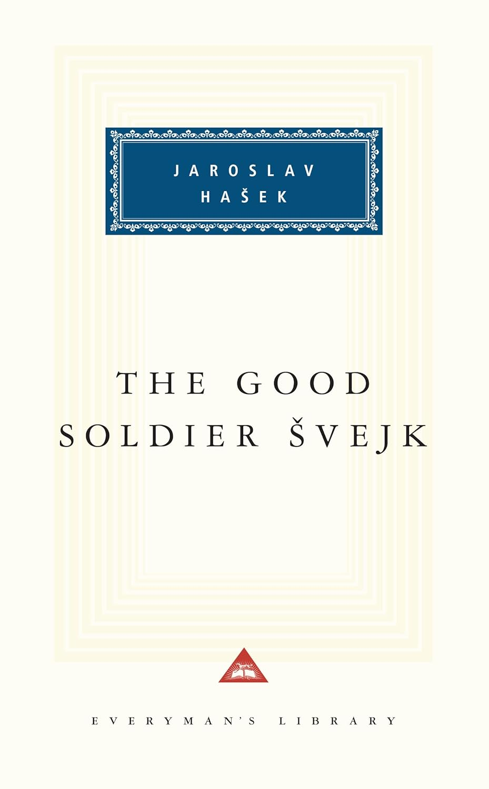
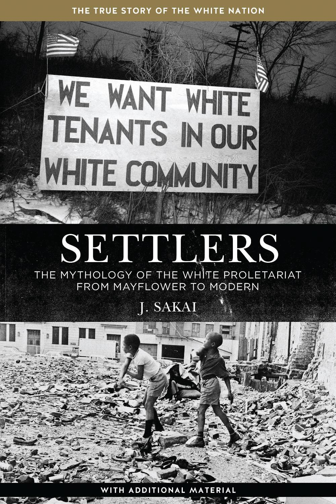
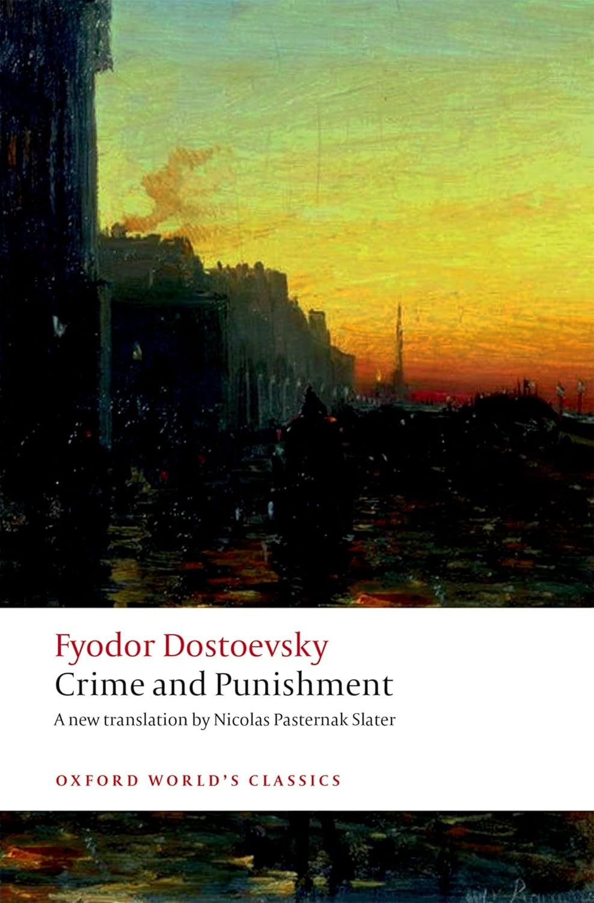

Book Club
I've been reading some books, if you even care 🙄.
The Good Soldier Švejk - Jaroslav Hašek

Settlers: Mythology of the White Proletariat from Mayflower to Modern - J. Sakai
 I think the title of this is long enough to tell you what the book is about. If not; it's an examination of labour struggles in the United SStates of AmeriKKKa from the colonisation of the continent up to the 1970s, specifically the way White labour has consistently given up any real opportunity to depose the capitalist system, instead being more than happy to remain obedient so they can get a sliver of the profits extracted from colonised peoples. This is probably a pretty confronting read for anyone who doesn't make a habit of reading leftist literature. It comes from a place of anger at the complete lack of solidarity from even White "leftists". At the same time, there's a bit of hope to be found in the multiple examples of the ability of the proletariat to actually force change.
Crime and Punishment - Fyodor Dostoyevsky
 This is one of those 'greats' that you hear about and think "yeah how great can it really be? no way it's as good as 'The Hungry Caterpillar'" or something. But then you read it and your little mind is blown. Like "oh okay this is actually one of the most competently written explorations of human nature that I've ever had the pleasure of reading." It just is that good.
This thing was written over 150 years ago but nothing about it seems aged. These are characters that feel entirely real. The things they feel and do are actually 'relatable' in a way that even a story written this decade would struggle to achieve. The amount of times I thought "omg (s)he's literally me" to myself while reading this was worrying. This is the novel that made me understand the hype around 'timeless classics', it made me realise that we've always been the same, we've always struggled with the same emotions and so it has a special place in my heart.